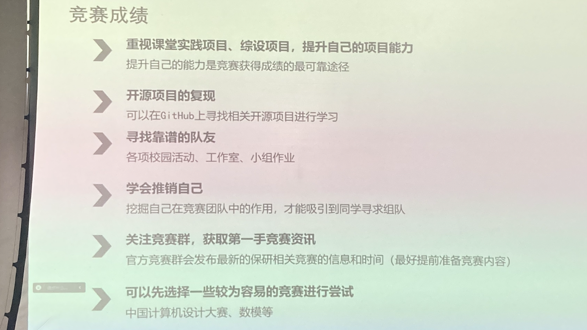
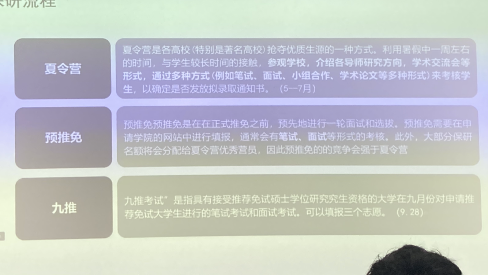
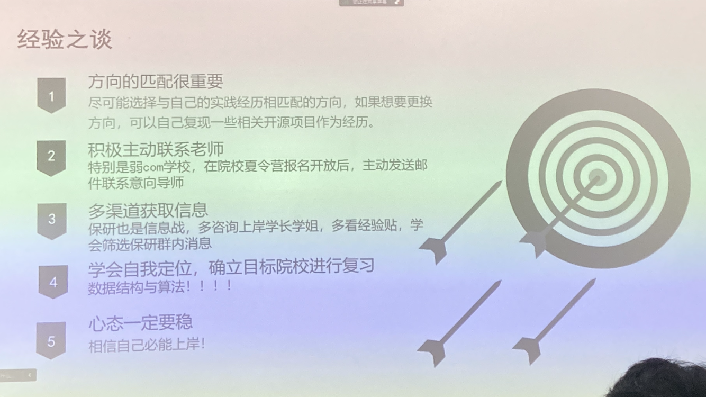
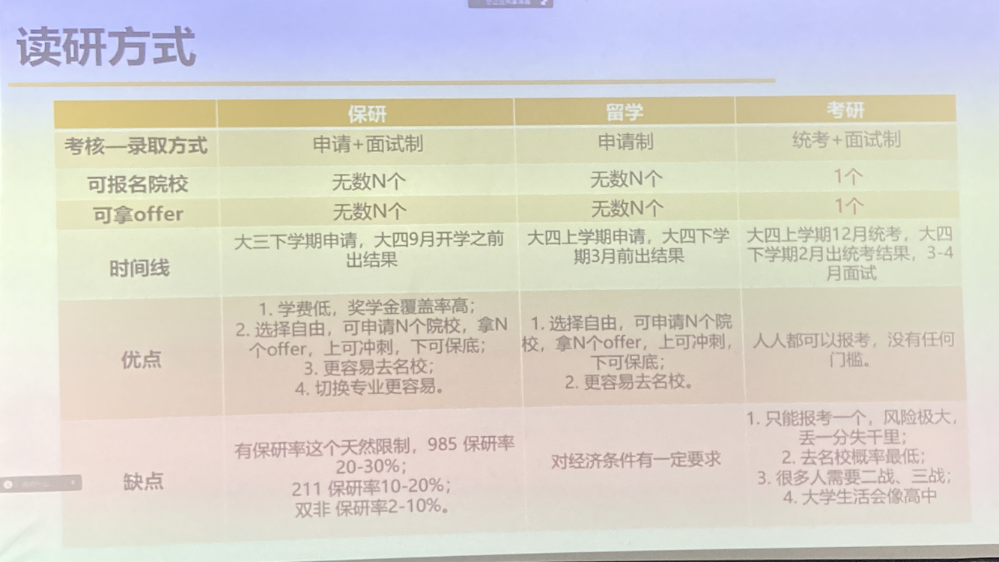
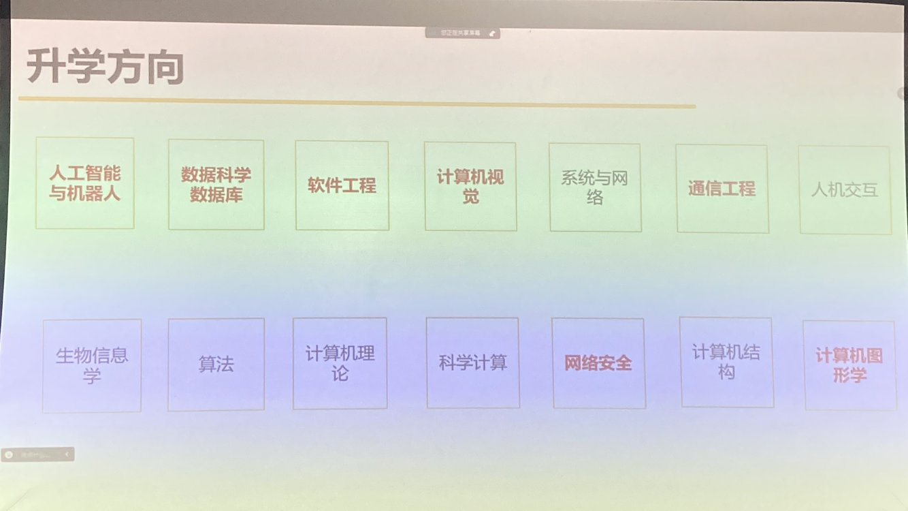
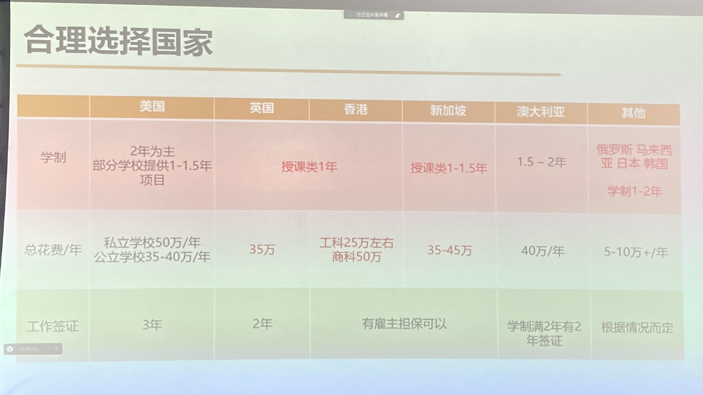
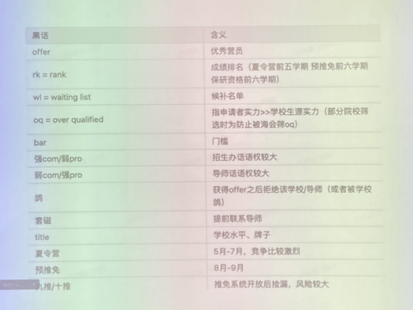
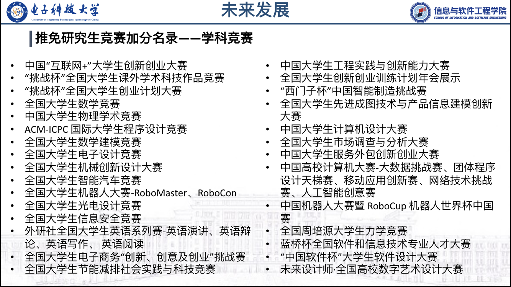
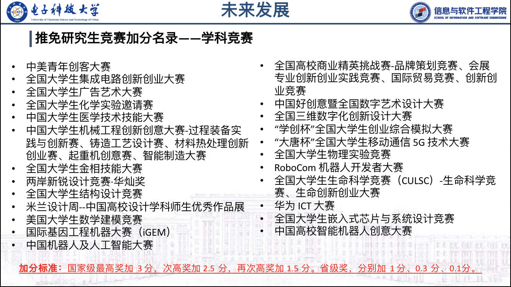

大学生活指南
成绩
85分满绩
工作室
（以星辰工作室为例）
关于工作室
以学习为重 志同道合 学业竞赛 工作offer 学习成绩与工作室完全可以兼得

工作室方向
产品方向
产品经理

开发
前端方向：web的界面设计 分为网页端和app端

后端方向：数据库，网络，服务器，数据流
后端能做什么：
返回前端需要的数据，接受处理前端提交的修改
确保数据库数据和用户信息的安全．
搭建配置服务器，熟练排查服务器异常
微服务架构，一致性缓存，高并发情况下业务的稳定性
移动端：安卓和ios的开发 iOS中同一套代码，可以多终端适配。 homekit、macos脚本。
运维DevOps： 网络安全 组网管理 Ons SD-WAN palaiSein ROMA Cent K8S.Docker 高性能集群构建维护 Meltanox产品故障维修
竞赛
大一上为竞赛打基础
大一下可以尝试一些竞赛或者可以让工作室学长学姐带自己感受一下竞赛流程
只靠课堂老师讲解对于竞赛是远远不够的
竞赛成绩

开源项目的复现：看guihub上有人提出的问题，有没有解决，和项目作者交流
寻找靠谱队友：各项校园活动，工作室，小组作业
学会推销自己：挖掘自己在竞赛团队的作用，吸引同学组队
关注竞赛群，夺取第一手竞赛资讯：官方竞赛群
可以先选择一些容易的竞赛：
作用
直接性帮助：保研加分，丰富简历，丰富软背景
间接性帮助：专业能力，合作能力，综合能力
什么时候参加？ 大一先把基础课学好，大二上好专业课 竞赛在暑假前三四个月，大概大二开始组队参加，建议先把专业知识基础打好再去参加
有哪些竞赛
计设、蓝桥杯、互加、挑战杯、网挑、服创、信安、ACM、全国大学生数学竞赛、数学建模竞赛
电科的名额算是很多的
学习
大二上专业课
大三上选择方向
大三下实习
学习tips：
学习基础学科：沿袭高三的学习模式，听课刷题做题总结预习复习
专业课学习：一定要实践，一定要上手
复习比预习更重要
关注老师划的重点，复习时有侧重的复习
护发
保研
保研准备
成绩（学业成绩和竞赛成绩）
平时成绩
关注平时成绩的构成比例
合理利用大小号（小号先做一遍，在用大号得高分。不能只抄答案，会有最后考核）
错题截图保存
线上考核尽可能拿到满分
重视实验课与作业、报告的完成度
考试成绩
课程学分越高考试成绩越重要，保研成绩是加权计算的（合理分配精力，高学分的课程优先）
把握考试月、考试周
寻找一个好的学习伙伴
寻找真题（学习指导好好利用，里面有真题。电子科大知博书店微信小程序，真题可以在这里买）
科研经历 （获得夏令营导师和面试官的青睐）
竞赛经历（见上竞赛）
规划：
大一寻找方向
多尝试多感受，多与任课老师交流（老师对方向的理解一般都比较深），科研是可以勇敢去尝试的
不断试错尝试多种方向是必要的
可以多多参加选择工作室
大学不能把时间精力都放在课内知识上
合理分配课内课外知识的学习时间
可以多看一看github上的开源项目
暑假不需要提前预习知识，把时间用来学习课外知识扩充自己
大二合理利用假期
尝试进行寒暑假科研活动
关注公告群信息
积极联系任课老师
知乎等渠道获取外校实验室招聘信息
大二下与大三上是冲竞赛的黄金时期
大三取得科研成果与文书准备
大三下开展实习
选择高自由度的岗位
保研流程
要更早开始保研流程：在夏令营之前要逐步联系意向学校的老师，早早占据名额
让老师了解你的实力和你来此校的诚意

夏令营进入难考核容易
预推免考核难
建议在九推之前就拿到一个保底的保研offer
经验之谈

不一定要联系大牛老师，有可能人家不招硕士
看目标院校是强con还是弱com
学会自我定位（如两个夏令营时间冲突时）确立目标院校进行复习
数据结构与算法仅靠课堂知识是不够的！！
心态一定要稳，一定有一个保底院校可以接受我们，被拒绝时不要怀疑自己，相信自己一定能上岸，而且本院是一定能为我们托底的
知乎搜索，学长咨询，院校保研群，全国大学保研交流群（群里会有一些仓库）
留学
当成绩不理想时可以考虑切换赛道，考虑出国留学，留学的赛道不卷

国际计算机领域升学方向：

出国留学预算：

考研很卷啊（我不怕）
找到自己的路
注:

竞赛：

